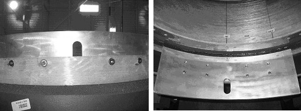

Operating Documentation
Direction 5133315-3, Rev# 14
Module Version 5.0, Version Date 6/18/09
Operating Documentation |
| ||||
| Strong Magnetic Field! | ||||
| Ferrous materials can become dangerous projectiles in the presence of the magnetic field Produced by the Signa Magnet. | ||||
| Do not Bring any ferromagnetic tools or equipment into the magnet room. |
| ||||
| Dangerous Work Area! | ||||
| Use of heavy equipment for coil removal and replacement presents hazards to all personnel in the area. | ||||
|
| Condition | Reference | Effectivity |
|---|---|---|
Gradient coil is removed from the magnet using Defective Gradient Removal Procedure. | - | - |
Remove the Tube and the two Tube Guide Roller Assemblies from the defective Gradient coil and install one onto each end of the new Gradient Coil Assembly.
On the new gradient, do the following:
Clean all mounting locations clear of debris (threaded and unthreaded).
| NOTE: | Step 2.b, Step 2.c, and Step 2.e through Step 2.i are only required if caulk has previously been applied to periphery of the bracket. |
Clean the bolt threads by using a tack cloth to perform a back forth motion clockwise/counterclockwise around the threads as shown in Illustration 2. Ensure any loose debris in the bolt threads is removed.
Clean underside of BRM bracket (2213168-3) by using a tack cloth as shown in Illustration 3. Make sure that the underside of the bracket is free of any metallic particles.
Install front support assembly (2213168-3) to front of gradient coil using four M10x40 screws (2174921-25), washers (2184009) and two drops of Loctite #242 (p/n 46-170686P3). Torque the M10x40 screws by hand so they are snug, then 1/2 turn to properly tighten.
Put on disposable protective gloves.
If the BRM bracket only uses 4 bolts then fill the 4 unused bolt holes with caulk as shown in Illustration 4. Wipe away excess caulk so that the caulk is flush with the bracket’s surface as shown in Illustration 5.
Apply caulk to the periphery of the bracket as shown in Illustration 6 by applying caulk to the tip of your finger and then running your finger along appropriate mating surfaces (use approximately 1/8 in. fillet of caulk). Dotted lines represent edges that are not visible from this view. Reapply caulk to your finger as needed. Illustration 7 (semi-circle), Illustration 8 (front edge), Illustration 9 (left edge), Illustration 10 (back edge) and Illustration 11 (right edge) provide a more distinct view of each of the mechanical barriers that are to be sealed with the caulk.
Apply a small amount of caulk to the periphery of the threaded bolts as shown in Illustration 12. The process is the same whether 4 or 8 bolts are used for the application.
Allow caulk to cure naturally.
Install rear support (2213167-3) to the rear of the gradient in the same manner.
| NOTE: | There are 8 screws for each bracket. If the gradient has 8 holes, use 8 screws; if the gradient has 4 holes, use only 4 holes of the 8 holes on the bracket, as shown in Illustration 13. |
| NOTE: | The old brackets in the WideOpen Enclosure differ from
the new brackets. See Illustration 13. Illustration 13: Gradient Brackets Installation  |
Remove the shipping blocks from the new Gradient Coil and cradle.
Remove the Gradient Coil roller assemblies from the defective Gradient coil and install onto the front end of the new Gradient coil.
Install the shipping blocks onto the defect Gradient coil cradle, one on each end. See Illustration 14.
Illustration 14: Install Gradient Coil Shipping Blocks

| NOTE: | Lift the defective Gradient coil and cradle from the cart using a fork lift or other lifting method that is capable of lifting 4000 lbs (1815 kg), and place on the ground. Lift the new Gradient Coil and cradle onto the cart using the same method. |
Wash the threaded holes on the end flange of the magnet with alcohol to make it ready for the mounting bracket.